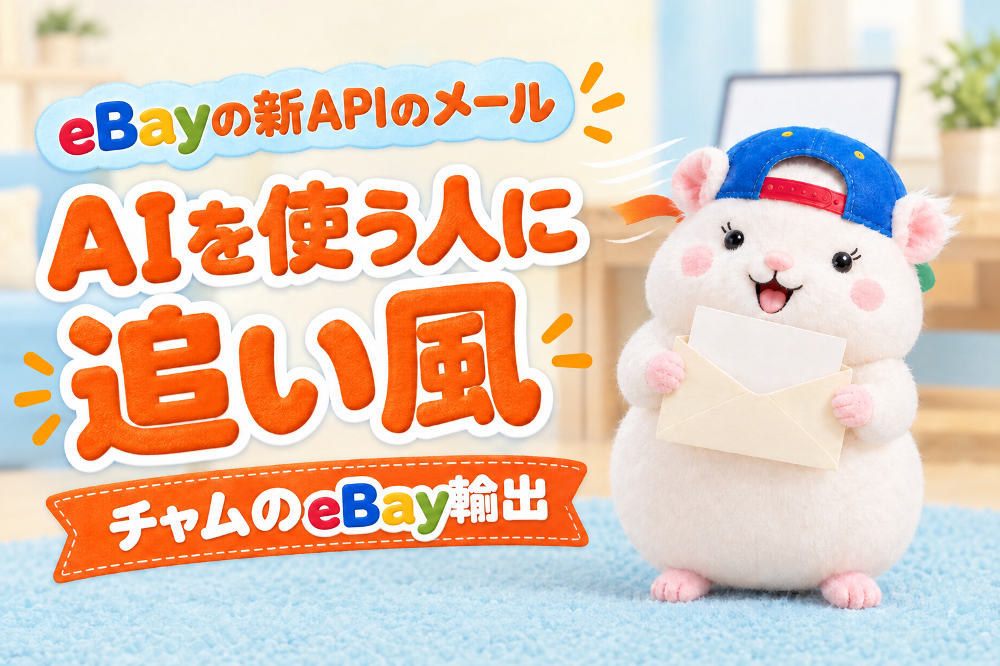

eBayから英語のメール「The Next Generation of eBay APIs Is Now Generally Available」が届いた方へ。
2026年10月28日にeBay Developers Programから届いたメール
AIでツールを作っている人には、追い風のメールです。
eBayが、AIで開発する人向けのツールを、公式に出してきました。
新しいAPIで作るのも、古いAPIからの乗りかえも、AIに頼みやすくなります。
ただし、まだ急いでやることはありません。
古いAPIがなくなる日付は、メールにも、移行の案内にも、まだ書かれていないからです。
この記事で分かることは、3つです。
- AIでツールを作っている人への、追い風
- APIのツールを使っているセラーが、確かめておくこと
- APIを使っていないセラーが、何もしなくていい理由
メールの中身を、ひとことで
APIは、プログラムでeBayを操作するための仕組みです。
出品・注文・メッセージを、画面を開かずに読んだり書いたりできます。
メールの中身は、3つです。
- 新しいAPI(RESTとGraphQL)が、正式に使えるようになった
- 古いAPI(Trading APIなどのXMLの形)は、いずれ廃止に向かう
- 乗りかえの案内と、AI向けのツールを用意した
GraphQLは、欲しい項目だけを指定して取れる、新しい問い合わせの形です。
廃止の日付は、まだありません。
ただし、古いAPIの一部の機能は、すでに1つずつ止まっています。
- カテゴリーの一覧を取る機能: 2026年4月15日に廃止
- カテゴリーごとの設定を取る機能: 2026年6月4日に廃止
全部が一度に止まるのではなく、少しずつ止まっていく形です。
①AIでツールを作っている人に、追い風
eBayが、AIに向けた道具を、公式にそろえてきました。
おもなものは、2つです。
- eBay MCP: AI(Claude CodeやCursorなど)が、eBayのAPIの仕様を調べたり、データを読んだりできる。読むだけで、出品や注文は変えられない
- Agent Skills: AIに、古いAPIから新しいAPIへの乗りかえを、計画して進めてもらうための手引き
ほかにも、APIの説明をAIが読みやすい形(Markdown)で出したり、質問に答えるチャットを用意したりしています。
▼eBayのAIツールのページ
何がうれしいかというと、AIが、eBayの最新の仕様を見ながらツールを書けるようになることです。
古いAPIからの乗りかえも、手引きごとAIに渡して頼めます。
AIでツールを作ってきた人ほど、乗りかえの手間は小さくなります。
ただし、eBay MCPは注文のデータも読めます。
注文には、買い手の名前や住所が入っています。
例えば、ぼくは、eBay Japanに問い合わせて書面で回答をもらった範囲で、AIを使っています。
公式のAPIを使うこと、買い手の個人情報をAIに渡さないこと、AIでeBayの画面を開かないこと、です。
なので、使うなら、APIの仕様を調べるところからにするつもりです(まだ入れていません)。
どこまでAIに任せるかは、eBayの規約を確かめたうえで、ご自身の責任で決めてください。
AIを使わず、移行の案内を自分で読んで進める道も、もちろんあります。
②APIのツールを使っているセラー → 使っている古い機能を書き出しておく
自分で作ったツールや、AIに作ってもらったツールで、APIを使っているセラー。
ここだけは、いまのうちに確かめておくと安心です。
やることは、ツールが使っている古いAPIの機能を書き出して、新しいAPIに代わりがあるかを見ること。
よく使う機能の代わりは、移行の案内にこう書かれています。
| 古いAPIの機能(何をするか) | 新しいAPIの代わり |
|---|---|
| GetItem(出品の情報を取る) | あり(sellerListings) |
| ReviseFixedPriceItem(出品を直す) | あり(updateListing) |
| GetOrders(注文を取る) | あり(orders) |
| GetMyMessages(メッセージを読む) | あり(Message API) |
| GetBestOffers・RespondToBestOffer(値下げ交渉) | あり(Offer API) |
| AddMemberMessageRTQ(質問に返信する) | 案内の表では空欄 |
例えば、ぼくは、古いAPIを6つのファイルで使っていました。
いちばん多いのは、出品の情報を取るGetItemです。
すでに廃止された機能は、使っていませんでした。
なので、いまは何も変えていません。
廃止の日付が出たら、この表の順に乗りかえます。
気をつけたいのは、質問への返信です。
ここだけは、代わりがまだはっきりしません。
お客さんへの返信をツールで送っているセラーは、ここを先に見てください。
③APIを使っていないセラー → 何もしなくていい
eBayの画面から出品しているセラーは、このメールに関係ありません。
画面の後ろの仕組みが変わるだけです。
市販のツールを使っているセラーも、乗りかえはツールの会社の仕事です。
見ておくのは、ツールの会社からのお知らせだけです。
まねできる手順: 使っている古い機能を、AIに書き出してもらう
ツールのフォルダを開いた状態で、AIにこう頼むだけです。
このフォルダの中で、eBayの古いAPI(Trading APIなどのXMLの形)を使っているところを、全部書き出してください。
機能の名前ごとに、使っている回数とファイル名を表にしてください。
eBayの移行の案内(https://developer.ebay.com/develop/guides/sell/modern-apis-migration-guide)を読んで、新しいAPIに代わりがあるかも書いてください。
コードは変えないでください。
「コードは変えないで」が大事です。
いまは、書き出すだけで十分です。
まとめ
eBayの新しいAPIのメール。
AIでツールを作っている人には、追い風です。
しかも、古いAPIの廃止の日付は、まだ決まっていません。
- AIでツールを作っている人 → eBay公式のMCPとAgent Skillsで、乗りかえもAIに頼みやすくなる。買い手の情報はAIに渡さない
- APIのツールを使っているセラー → 使っている古い機能を書き出しておく。質問への返信だけは、代わりがまだはっきりしない
- APIを使っていないセラー → 何もしなくていい。市販ツールのセラーは、ツールの会社のお知らせを見ておく
あなたのツールは、古いAPIの機能をいくつ使っていますか?
上の指示文で、5分で分かります。
英語のメールだったけど、中身は追い風。
台帳に書いておこう🐹
▼APIでできることは、こちらにぜんぶまとめています

▼中の人🏠(レンタルスペース23部屋・売上1.5億)のレンスペ実録

▼ブログ(eBay×レンスペ、全記事まとめ)

▼この店のやり方は、ぜんぶ1冊にまとめてあります
リサーチ・出品・値付け・顧客対応まで、初月利益10万4,286円を出した実店舗の記録と手順を全部書いた教科書です。
読んだその日から、AI社員の作り方をそのまま真似できます。
『AI × eBay輸出の教科書 — 梱包以外、ぜんぶAI』


🎁 2026年10月22日に第3版になりました。顧客対応 完全自動化ツール・ストアドクター・AI自動化コーチなど付録6つは、これまでに買った人も含めて購入者全員に無料で受け取れます。
内容・最新価格は販売ページをご確認ください。